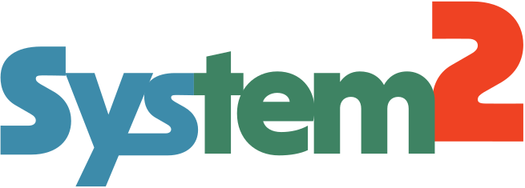

The epistemic gatekeeper for edge AI.
Small local models get it wrong 15 to 25% of the time. System2 is a non-autoregressive, 5-head deliberation engine that catches those failures in about 500ms, before the code runs.
Get the weights (143 MB) How it works
143 MB
ModernBERT + LoRA + 5 ThoughtHeads
41.8%
Confidence on live drift. Execution halted.
"System2's job is not to magically make a broken model write code. It is to catch those failures on Apple Silicon and say: certainty is 41.8%, do not run this code."
How dual-process inference works
Fast 4-bit generator. Non-autoregressive judge. Runs on a laptop.
01
Parallel candidates
A 4-bit 7B to 12B local model (e.g. Gemma 4 12B) drafts 4 independent candidates in under 3 seconds.
02
5-head deliberation
Five asymmetric ThoughtHeads score every candidate from different perspectives in a single forward pass. No token streaming.
03
Consensus or halt
If the heads agree, run locally for free. If they fracture, epistemic drift is flagged and execution stops.
Swarm benchmark
Apple Silicon M4 Max, 128 GB. Multi-agent build of a thread-safe LRU TTL cache.
| Generator | Memory | Node | Cache | Tests | Deliberation | Outcome |
|---|---|---|---|---|---|---|
| Qwen 27B Smoll2.0-bit GGUF (<think> on) | 6.77 GB | 99.7% | 94.2% | 99.6% | 580 ms | 0% (CoT loop truncation) |
| Qwen 27B IQ3_XXS3.0-bit GGUF (<think> on) | 10.18 GB | 81.6% | 75.2% | 67.8% | 982 ms | 0% (2,500 token ceiling) |
| Gemma 4 12B4.0-bit MLX (<think> on) | 6.77 GB | 76.6% | 98.7% | 41.8% | 1,107 ms | Drift caught live (41.8%) |
| Qwen 27B Smoll2.0-bit GGUF (direct + S2 guard) | 6.77 GB | 98.5% | 99.4% | 98.5% | 610 ms | 67% (2/3 Pytest Passed) |
| Qwen 27B IQ3_XXS3.0-bit GGUF (direct + S2 guard) | 10.18 GB | 98.5% | 99.7% | 99.2% | 941 ms | 100% (12/12 Pytest Passed) |
| Gemma 4 12B4.0-bit MLX (direct + S2 guard) | 6.77 GB | 99.6% | 99.9% | 99.5% | 891 ms | 100% (4/4 Pytest Passed) |
Grab the checkpoint
Frozen weights, Apache 2.0, hosted on Hugging Face.
pip install huggingface_hub
huggingface-cli download \
tjdoomer/system2-code system2_code.ptGate a decision
Runs on Apple Silicon (mps) or NVIDIA (cuda).
from sys2 import System2Engine
engine = System2Engine(device="mps")
result = engine.adjudicate(
question="Pick the thread-safe LRU node:",
choices=[a, b, c, d],
domain="code",
)
print(result.confidence)